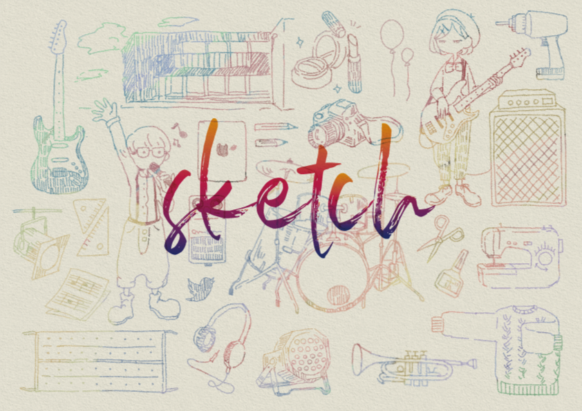
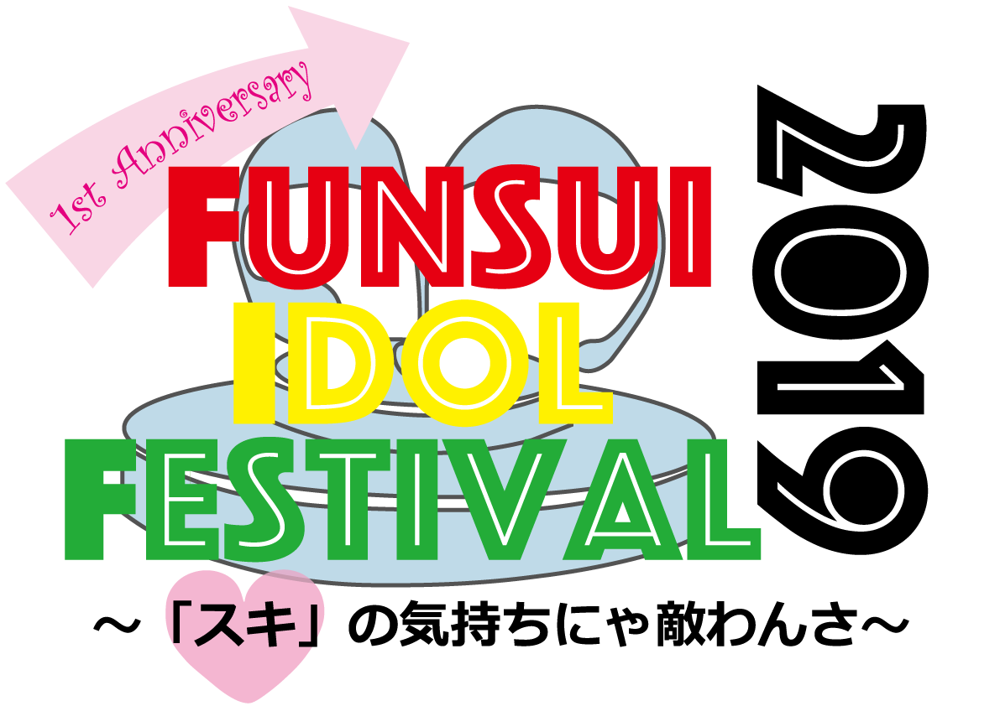
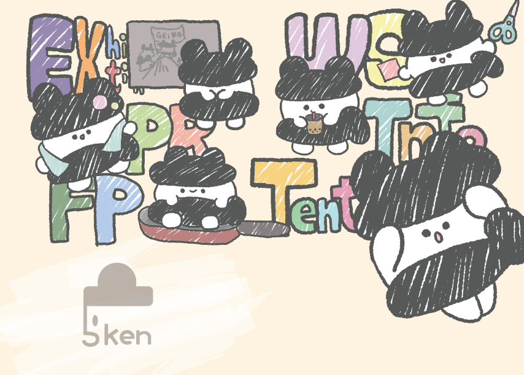
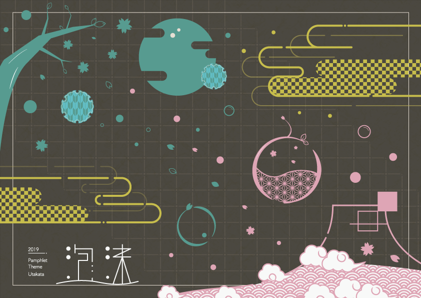
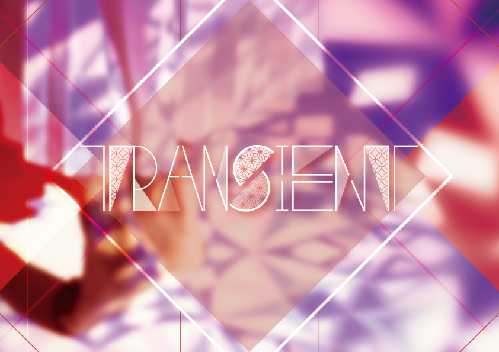
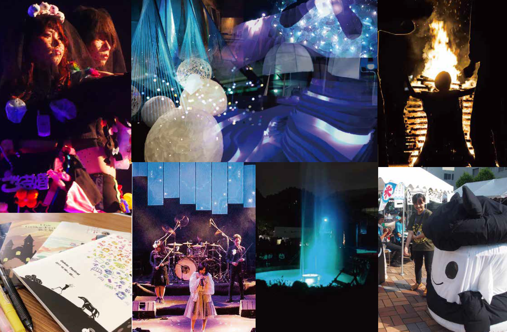
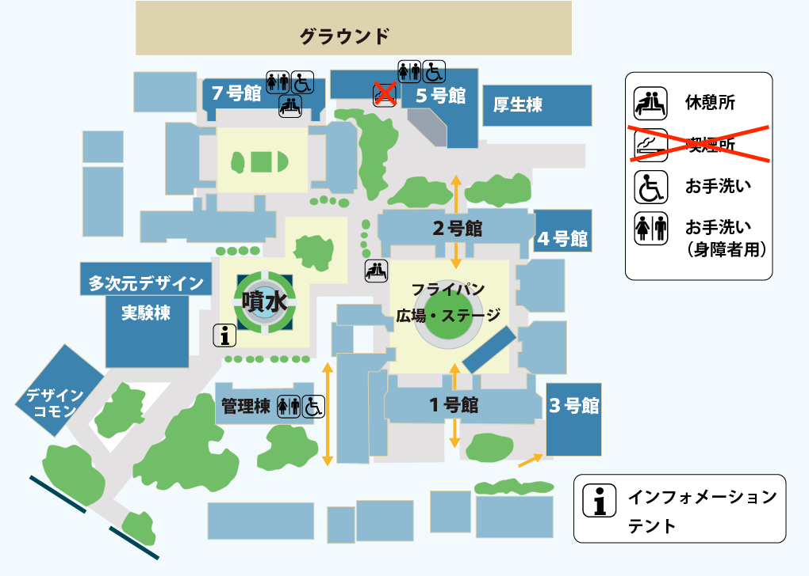
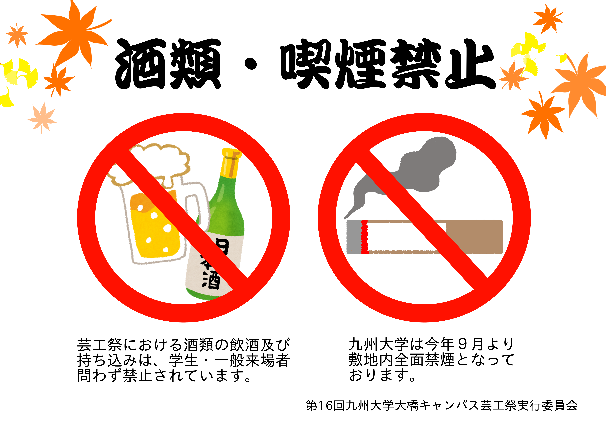

zenya

私たちは芸術工学部で舞台、衣装、照明、音響などすべて自分たちで作るライブを行なっているzenyaという団体です！
今年も学祭の前日である10月11日の夜に盛り上がること間違いなしのライブを行います。今年のタイトルは、「sketch」！！
是非多次元に足を運んで、私たちと一緒に最高の夜を描きましょう！！
噴水企画

噴水企画（通称：3研）は、
大橋キャンパスのシンボルである噴水の上にステージを作り、
そこで演劇やライブなどの様々なパフォーマンスを行うことによって、
芸工祭全体を盛り上げることを目的としている噴水信仰集団です
今年の3研は
──アイドルプロデューサー軍団!?
3研から誕生した「全身ずぶ濡れ発狂アイドル」ことFONTAINEが、
歌・ダンス・衣装など全てがオリジナルのライブで芸工祭を盛り上げます！
FONTAINEが魅せる、本物の輝きを見逃すな──。
5研

実行委員会、通称「5研」は芸工祭全体の運営を行なっています。
芸工祭当日には、テント企画・フライパンライブ・ワークショップ・展示会・相談室など
様々な企画も運営しています。
芸子ちゃんもいるよ！
Panf

Panfは芸工祭パンフレットのページ制作をメインに活動する地域密着型デザイナー集団です。
16冊目となる今年のPanfのテーマは「泡沫」。水面に浮かぶ泡のように、
はかなく消えやすいものの一瞬の美しさを表現します
2研

2研企画とは「インスタレーション」と呼ばれる体験型イベントを提供する団体です。
見た人に考えるきっかけとなるような何かを"伝えて"います。
今年のテーマは「TRANSIENT」
"世界は変わり続ける"
CBA project
CBAprojectとは。
九州大学芸術工学部の有志によるエンターテイメントファッションショー。
モデルは勿論のこと、舞台、映像、音効、照明、演出ーーすべてを０から創り出します。
今年のタイトルは『Notice.』。見るもの全てが新しい、新感覚のショーをお楽しみください。
火祭

芸工祭の最後を飾るのは48年の伝統を持つ火祭です。
麻袋を身に纏い、顔に奇天烈な化粧を施し、火を囲めば、ほら、今にも踊り出しちゃいそう！
ずっと前から火祭のことが好きだった誰よりも〜♪
ということで、今年のテーマは「MAJIでSOIする5秒前」です。

10.12(土) 10.13(日)
九州大学大橋キャンパス
・更新情報
10/13(日)本日の芸工祭は全企画予定通りに実施いたします。3研噴水企画の公演は本日の13時〜に変更されています。
10/12(土):本日午前中は予定通り芸工祭を開催しております。午後も２研企画とフライパンライブは実施いたします。テント企画（模擬店）は天候の様子を見て営業を続けるか判断いたします。
10/11(金):芸工祭開催日10月12日、13日に台風接近の予報が出ております。現在は両日通常通り開催の予定ですが、今後の天候や予報次第では一部企画の日程変更や中止を判断する可能性もあります。その際はこちらのHPと公式Twitterにてお知らせいたします。また、ご来場をお考えの方は今後の天候の情報に十分ご留意された上でお越しください。
10.10 (木):
(重要)芸工祭開催日の10月12日、13日前後に台風19号が九州に接近するとの予報が出ております。
12日(土)の12時以降と、13日(日)は開催予定ですが、強風の影響と安全面を考慮し、12日（土）の午前中（9時〜12時）に日程の変更の可能性があります。12日(土)の9時～12時については、11日(金)の朝10時ごろ判断し、この公式ページとtwitterにてお知らせいたします。ご確認ください。
9.12 (木):
第16回芸工祭のホームページ公開しました。
芸工祭とは
九州大学芸術工学部による学園祭です。
学生が1から作り上げる大橋キャンパス
最大のイベントです。
今年度のテーマは...
玉響 です。
長い時間をかけて作り出す芸工祭は束の間の
ひと時に過ぎずどこか儚さすら感じるとことがありますが、
その一瞬のような時間の中には様々な人の想い
交錯して織りなす美しさも感じられます。
芸工祭が皆さまにとって素敵なひと時になるように
という思いを込めて玉響といたしました。
・芸工相談室
芸術工学部の各学科の学部・卒業生が、
受験生やその保護者の方の質問に応える
高校生向けの相談室です。
質問のある方は是非お越しください!
場所：5号館525教室
日時：芸工祭１日目(10/12)11時~15時
参加予約受付中！
コチラから申し込みできます。
・イベント
学祭企画
芸工祭では、舞台・演出・音響などの
全てを自らで作り上げ各イベントを開催します。
zenya
芸工祭前日
他の企画の先陣を切り
熱いLIVEを繰り広げます
噴水企画
噴水の周りに
作られたステージの上で
公演を行います
5研
芸工祭全体の
運営を行います。
Panf
パンフレットを製作・配布する
デザイナー集団です
2研
音や照明、映像など
様々な要素を組み合わせて
創造的な空間を作り上げます
CBA
既存の型に囚われない
新しいファッションの形を
発信します
火祭
炎を囲んで踊り続ける
芸工祭の伝統ある
フィナーレイベントです
zenya
芸工祭前日
他の企画の先陣を切り
熱いLIVEを繰り広げます
噴水企画
噴水の周りに
作られたステージの上で
公演を行います
5研
芸工祭全体の
運営を行います。
Panf
パンフレットを製作・配布する
デザイナー集団です
2研
音や照明、映像など
様々な要素を組み合わせて
創造的な空間を作り上げます
CBA
既存の型に囚われない
新しいファッションの形を
発信します
火祭
炎を囲んで踊り続ける
芸工祭の伝統ある
フィナーレイベントです
一般・テント企画
芸術工学部内の有志が集い、
教室内、またはテントにてサークル展示や体験型
イベント、食べ物屋グッズ販売を行う企画です。
今年もテント企画の一番を決める「T−１グランプリ」
を開催します。
・ 教室企画一覧
・ テント企画一覧
・ご来場の方へ
○ 会場内地図
○ アクセス
- 西鉄大橋駅より徒歩5分
- 西鉄バス塩原4丁目(バス停)より徒歩5分
- jR竹下駅より徒歩10分
○ 飲酒喫煙に関して
九州大学
九州大学 | 芸術工学研究所・芸術工学府・芸術工学部
九州大学(KYUSHU UNIVERSITY)